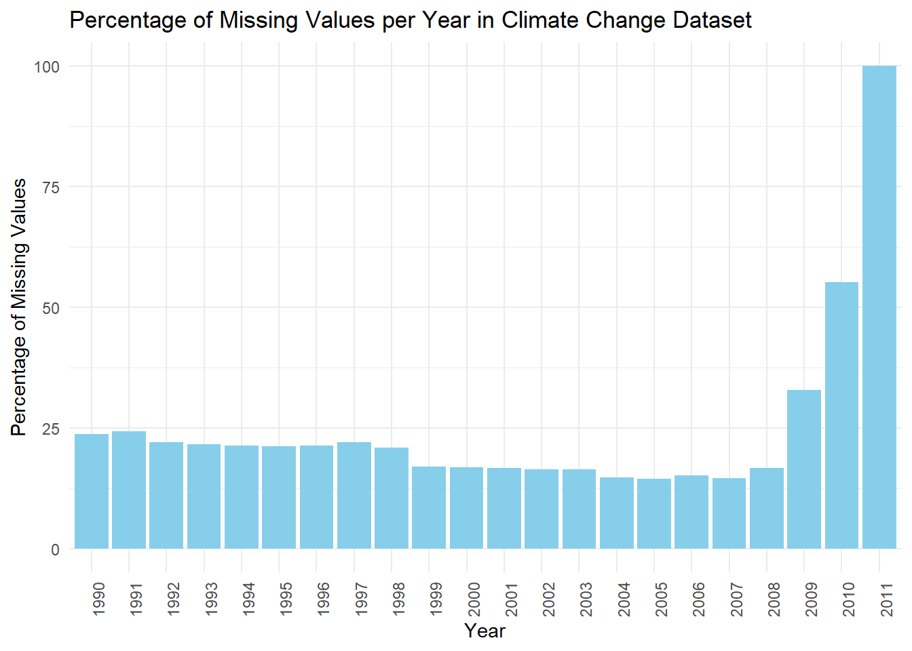
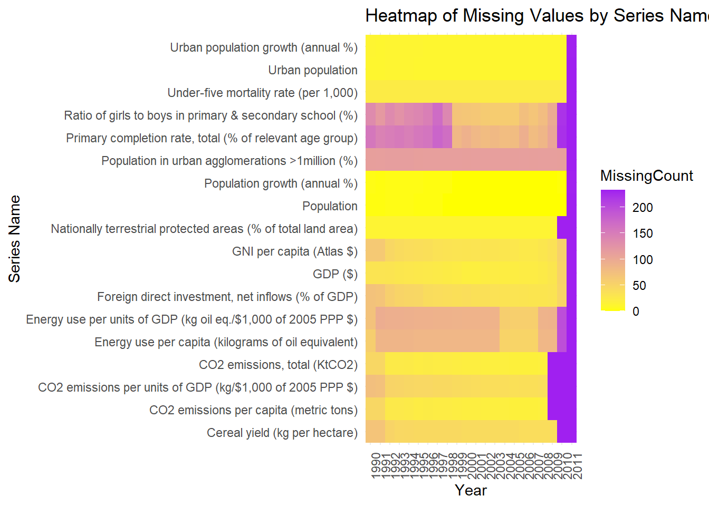
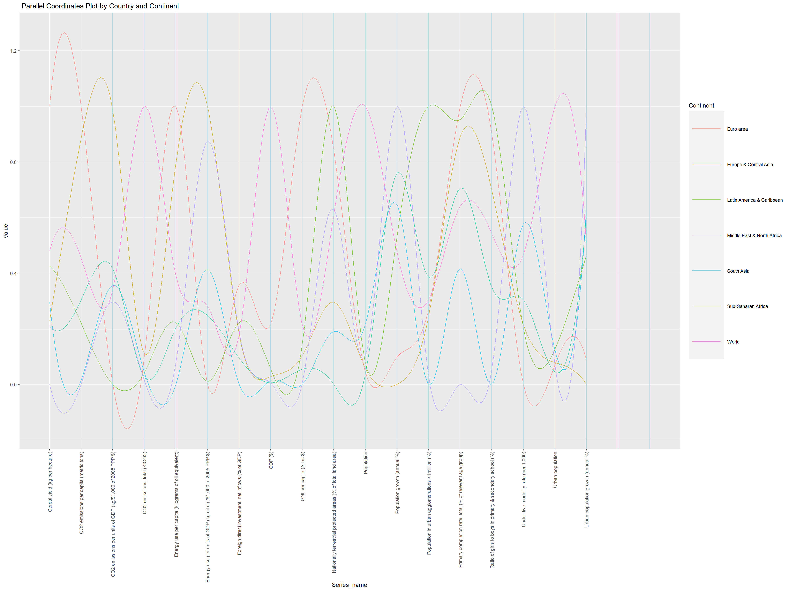
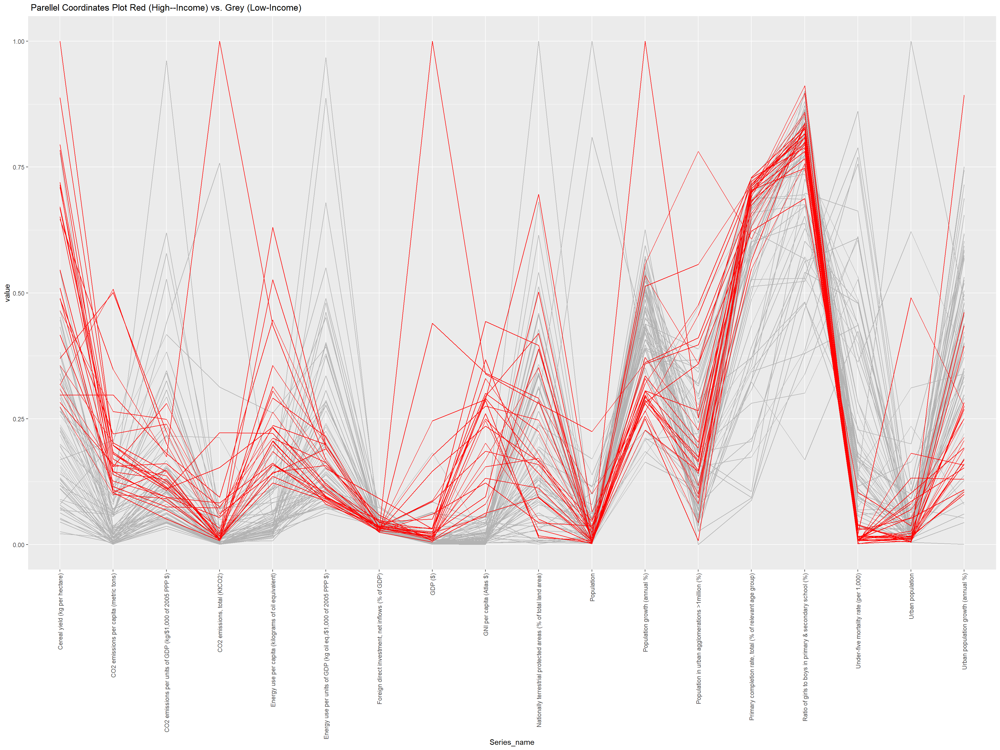

3.2Note: The missing value Histogram and Heatmap in section 3.1 is very important and different from the 2.3 Missing value analysis graph. Our data is tricky and dense. These graphs are necessary in the 3.1 Results section. These missing value analysis is after the initial preprocessing from preprocess.qmd. We still need these graphs in order to pick and choose what to plot fruther. If we used the missing value graphs from 2.3 we would be confused on determining which Series_name and year to use as we just have too many categories.
Rows: 4192 Columns: 29
── Column specification ────────────────────────────────────────────────────────
Delimiter: ","
chr (5): Country_code, Country_name, Series code, Series_name, Income_group
dbl (23): SCALE, Decimals, 1990, 1991, 1992, 1993, 1994, 1995, 1996, 1997, 1...
lgl (1): 2011
ℹ Use `spec()` to retrieve the full column specification for this data.
ℹ Specify the column types or set `show_col_types = FALSE` to quiet this message.
Code
library(dplyr)library(tidyverse)data <- data %>%select(-SCALE, -Decimals, -Income_group)# Drop non-year columnsdata_simplified <- data[, 5:ncol(data)]# Convert the Year columns to character typedata_simplified <- data_simplified %>%mutate(across(starts_with("20") |starts_with("19"), as.character))# Convert data to a long formatdata_long <-pivot_longer(data_simplified, cols =everything(), names_to ="Year", values_to ="Value")# Calculate the total number of entries for each yeartotal_values <- data_long %>%group_by(Year) %>%summarise(Total =n())# Count the missing values for each yearmissing_values <- data_long %>%group_by(Year) %>%summarise(Missing =sum(is.na(Value)))# Join the dataframes to calculate the percentagepercentage_missing <-left_join(missing_values, total_values, by ="Year") %>%mutate(Percentage = (Missing / Total) *100)# Create a bar plot for the percentage of missing valuesggplot(percentage_missing, aes(x = Year, y = Percentage)) +geom_bar(stat ="identity", fill ="skyblue") +theme_minimal() +theme(axis.text.x =element_text(angle =90, hjust =1)) +labs(title ="Percentage of Missing Values per Year in Climate Change Dataset",x ="Year",y ="Percentage of Missing Values")

The chart shows how much information is missing from a climate change dataset over the years 1990 to 2011.
From the chart, it’s easy to see that between 1990 and 2007, the amount of missing information doesn’t change too much. We can’t see the exact numbers, but it looks like around 10% to 25% of the data is missing each year. This means that most of the data is there, and people could still use it to learn things, but they should be a bit careful because some information is missing.
But starting in 2008, something happens, and a lot more information is missing. This gets worse in 2009 and 2010, and by 2011 almost all the data is missing. This makes the information from these years not very trustworthy for figuring things out or making decisions because too much is missing. The 2011 data is pretty much all gone, which means it’s not really useful unless someone finds a good way to fill in the gaps.
The reasons for this could be many, like maybe the way they collected the data changed, some data got lost, or the people or groups collecting the data changed. Someone would need to look more into it to find out why.
If someone wants to use this dataset for research or to analyze trends, they should be really careful with the data from 2008 and after. The data from these years might even need to be left out unless there’s a good way to fill in the missing pieces. This situation also makes you wonder if the data was handled well when it was collected and stored.
3.3 3.1 Missing variable Heatmap
Code
# Select only the 'Series name' and year columns for analysisdata_simplified <- data[, c("Series_name", names(data)[5:ncol(data)])] # Adjust if needed# Convert data to a long formatdata_long <-pivot_longer(data_simplified, cols =-Series_name, names_to ="Year", values_to ="Value")# Create a new column to indicate missing values (1 if missing, 0 if not)data_long$IsMissing <-as.integer(is.na(data_long$Value))# Aggregate the data to count missing values for each 'Series name' and 'Year'missing_values_count <- data_long %>%group_by(Series_name, Year) %>%summarise(MissingCount =sum(IsMissing)) %>%ungroup()
`summarise()` has grouped output by 'Series_name'. You can override using the
`.groups` argument.
Code
# Create a heatmapggplot(missing_values_count, aes(x = Year, y = Series_name, fill = MissingCount)) +geom_tile() +scale_fill_gradient(low ="yellow", high ="purple") +theme_minimal() +theme(axis.text.x =element_text(angle =90, hjust =1), axis.text.y =element_text(angle =0, hjust =1)) +labs(title ="Heatmap of Missing Values by Series Name and Year",x ="Year",y ="Series Name")

The heatmap provides a visual representation of missing data across various series over time. Looking at the heatmap, we can see different Series_name indicators listed on the y-axis, like “Urban population growth (annual %)” and “Cereal yield (kg per hectare)”, among others. The years are shown on the x-axis.
The color in the heatmap changes from purple to yellow. In areas where the heatmap is purple, there’s a lot of data missing, and where it’s yellow, most of the data is there.
Some Series_name, like “Cereal yield (kg per hectare)” and “CO2 emissions per capita (metric tons)”, have quite a lot of data available.
Other Series_name, particularly towards the top, such as “Ratio of girls to boys in primary & secondary school(%)”, have fair amount of missing data, espeically in the earlier years.
2011 is definitely is missing all of the values for most Series
Overall there is a noticeable increase in missing data across almost all indicators in the most recent years on the right side of the heatmap.
This pattern tells us that the dataset was more complete in earlier years and has become less so over time. This means we need to be careful when looking at trends or patterns that include the more recent years.
4 3.1 Missing variable Heatmap2
Code
# Load necessary librarieslibrary(tidyverse)# Select only the 'Country name' and year columns for analysisdata_simplified <- data[, c("Country_name", names(data)[5:ncol(data)])] # Adjust if needed# Convert data to a long formatdata_long <-pivot_longer(data_simplified, cols =-Country_name, names_to ="Year", values_to ="Value")# Create a new column to indicate missing values (1 if missing, 0 if not)data_long$IsMissing <-as.integer(is.na(data_long$Value))# Aggregate the data to count missing values for each 'Series name' and 'Year'missing_values_count <- data_long %>%group_by(Country_name, Year) %>%summarise(MissingCount =sum(IsMissing)) %>%ungroup()
`summarise()` has grouped output by 'Country_name'. You can override using the
`.groups` argument.
Code
# Create a heatmapggplot(missing_values_count, aes(x = Year, y = Country_name, fill = MissingCount)) +geom_tile() +scale_fill_gradient(low ="yellow", high ="purple") +theme_minimal() +theme(axis.text.x =element_text(angle =90, hjust =1), axis.text.y =element_text(angle =0, hjust =1)) +labs(title ="Heatmap of Missing Values by Series Name and Year",x ="Year",y ="Series Name")
The heatmap provides a visual representation of missing data across countries over time. Looking at the heatmap, we can see different country indicators listed on the y-axis, like “Zimbabwe” and “United States”, among others. The years are shown on the x-axis. We see a noticable trend here. Some most countries either miss a lot of data, or they have a lot of data. There is no in between. For example, st.Martin has missing values significantly. *Note, this is after preprocessing for missing values based on Series_name in the preprocess, which is documented in the preprocess folder. We also see that 2011 is a significant year in terms of missing values.
`summarise()` has grouped output by 'Series_name'. You can override using the
`.groups` argument.
Code
# Normalize the data by Series_namenormalized_data <- aggregated_data %>%group_by(Series_name) %>%mutate(Normalized_Value =scale(Avg_Value))ggplot(normalized_data, aes(x = Year, y = Normalized_Value, color = Series_name)) +geom_point() +facet_wrap(~ Series_name) +theme_minimal() +labs(title ="Normalized Climate Values by Series over Years", x ="Year", y ="Normalized Value") +theme(axis.text.x =element_text(angle =90, hjust =1),legend.position ="bottom")
The scatterplot titled “Normalized Climate Values by Series over Years” shows different climate-related indicators over time. Each row of dots represents a different Series_name, like farm yields or gas use, and the dots are colored differently for each Series_name. The x-axis represents years, and the y-axis represents normalized values, which means the data has been adjusted to compare them on the same scale for proper visualization and seeing increase over time. Let’s go over some of the Series_name: -Cereal yield (kg per hectare) increases over time from 1990 to 2010. This means that we have more harvest within the same area size.
CO2 Emissions per Capita (metric tons): The second plot with orange dots illustrates CO2 emissions per capita. The dots show variability, and there seems to be a general increase over the observed period. This might imply that as a global trend, countries are not becoming more carbon-efficient and that societal shifts towards less carbon-intensive activities did not occur at least until 2010.
CO2 Emissions per Units of GDP: The third plot with yellow dots displays CO2 emissions relative to economic output. There is a visible downward trend, indicating an increase in economic efficiency; as the economy grows, it produces less CO2 for every dollar of GDP, which can be a positive sign for environmental sustainability.However, it can also indicate that our GDP has risen so fast that it’s making a decline in this graph. This is more reasonable considering “CO2 Emissions per Capita (metric tons)” increased over the same amount of time.
Total CO2 Emissions (KtCO2): The fourth plot reveals total CO2 emissions, with a clear upward trend seen in the yellow dots. This suggests that along with per capita efficiencies, the total emissions are still increasing, likely due to overall economic and population growth.
Energy Use per Capita (kilograms of oil equivalent): The fifth plot shows energy use per capita, indicated by green dots. This plot reveals relatively stable energy consumption per person over time with some fluctuation. It doesn’t indicate a clear increasing or decreasing trend, suggesting that energy use habits may have remained consistent.
The Urban Population and Population growth plot both signifies that we have a population increase over time.
Rows: 4192 Columns: 29
── Column specification ────────────────────────────────────────────────────────
Delimiter: ","
chr (5): Country_code, Country_name, Series code, Series_name, Income_group
dbl (23): SCALE, Decimals, 1990, 1991, 1992, 1993, 1994, 1995, 1996, 1997, 1...
lgl (1): 2011
ℹ Use `spec()` to retrieve the full column specification for this data.
ℹ Specify the column types or set `show_col_types = FALSE` to quiet this message.
Code
library(dplyr)library(tidyverse)#same as before but with Income Groupdata <- data %>%select(-SCALE, -Decimals)impute_data <- data impute_data$MeanValue <-rowMeans(impute_data[, 5:26], na.rm =TRUE)impute_data <- impute_data[!is.na(impute_data$MeanValue), ]impute_data <- impute_data %>%mutate(across(`1990`:`2011`, ~ifelse(is.na(.), MeanValue, .)))#impute_data <- impute_data %>%# select(-MeanValue)# Convert data to long format and adjust typeslong_data <- impute_data %>%pivot_longer(cols =starts_with("19") |starts_with("20"), names_to ="Year", values_to ="Value") %>%mutate(Year =as.integer(Year), Income_group =as.factor(Income_group))# Bar plot for income group distributionggplot(long_data, aes(x = Income_group)) +geom_bar() +theme_minimal() +theme(axis.text.x =element_text(angle =45, hjust =1), # Rotate x-axis labels by 45 degreesaxis.title.x =element_blank(), # Remove x-axis label ) +labs(title ="Income Group Distribution of Countries", x ="Income Group", y ="Count")
The bar chart titled “Income Group Distribution of Countries” shows the count of data entries categorized by different income groups of countries. These groups are “Aggregates,” “High income: nonOECD,” “High income: OECD,” “Low income,” “Lower middle income,” and “Upper middle income.”
Aggregates: This category has the fewest data entries, shown by the shortest bar. “Aggregates” might refer to data that’s combined from different countries or groups.
High income: nonOECD: The next category, which represents countries with high income that are not part of the Organisation for Economic Co-operation and Development (OECD), has more entries than “Aggregates” but fewer than the other categories.
High income: OECD: This bar is taller than the “High income: nonOECD,” indicating that there are more data entries for countries with high incomes that are part of the OECD.
Low income: The “Low income” category has approximately the same number of entries as “High income: nonOECD,” which suggests that the dataset has a balanced representation of these two income groups.
Lower middle income and Upper middle income: These two categories have the most data entries, with their bars being the tallest and very close in count. This suggests that there is a significant amount of data on countries that fall into the middle-income brackets.
4.3 3.4 Parellel Coordinates Plot by Country and Income Group
Rows: 4192 Columns: 29
── Column specification ────────────────────────────────────────────────────────
Delimiter: ","
chr (5): Country_code, Country_name, Series code, Series_name, Income_group
dbl (23): SCALE, Decimals, 1990, 1991, 1992, 1993, 1994, 1995, 1996, 1997, 1...
lgl (1): 2011
ℹ Use `spec()` to retrieve the full column specification for this data.
ℹ Specify the column types or set `show_col_types = FALSE` to quiet this message.
Code
library(dplyr)library(tidyverse)#same as before but with Income Groupdata <- data %>%select(-SCALE, -Decimals)impute_data <- data impute_data$MeanValue <-rowMeans(impute_data[, 5:26], na.rm =TRUE)impute_data <- impute_data[!is.na(impute_data$MeanValue), ]impute_data <- impute_data %>%mutate(across(`1990`:`2011`, ~ifelse(is.na(.), MeanValue, .)))impute_data <- impute_data %>%select(-MeanValue)# Convert data to long format and adjust typeslong_data <- impute_data %>%pivot_longer(cols =starts_with("19") |starts_with("20"), names_to ="Year", values_to ="Value") %>%mutate(Year =as.integer(Year), Income_group =as.factor(Income_group))# Group by 'Country_name' and 'Series_name', and calculate the average 'Value'averaged_data <- long_data %>%group_by(Country_name, Income_group, Series_name) %>%summarise(Average_Value =mean(Value, na.rm =TRUE))
`summarise()` has grouped output by 'Country_name', 'Income_group'. You can
override using the `.groups` argument.
Code
wide_data <- averaged_data %>%group_by(Country_name, Income_group) %>%spread(key = Series_name, value = Average_Value)wide_data <- wide_data %>%filter(Income_group !="Aggregates")#wide_data <- wide_data[-(1:15),]# Plotting the parallel coordinates plotggparcoord(wide_data, columns =3:20, alphaLines = .5,scale ="uniminmax", splineFactor =10, groupColumn =2) +geom_vline(xintercept =3:20, color ="lightblue") +theme(axis.text.x =element_text(angle =90, vjust =0.5, hjust =1),legend.text =element_text(size =12), # Increase the text size of legend itemslegend.key.size =unit(4.5, 'lines') # Increase the size of the legend keys ) +labs(x ="Series_name", # Add your x-axis title heretitle =" Parellel Coordinates Plot by Country and Income Group" )
This is a parallel coordinates plot scaled uniminimax based on each of the “Series_name” variable in the x-axis and the y-axis is it’s corresponding values. Each line represents a country, and the different colors represent the income groups: high income (both OECD and non-OECD countries), upper middle income, lower middle income, and low income.
There is a wide range of values across different indicators for countries within the same income group. This suggests that countries with similar income levels can still have very different profiles when it comes to climate-related metrics. Certain indicators may show clustering by income group. For instance, high-income OECD countries may have lower values on some emissions or energy use metrics, indicating more efficient energy use or lower emissions relative to their economic output. For high income OECD countries, they do well on CO2 emissions per capita. In contrast, interetignly high income non-OECD countries do not do well in CO2 emissions per capita. This shows that OECD high income countries do a better job in terms of C02 emissions. lower income countries tend to do much worse in CO2 related indicators like the C02 emissions per capita.
We also see that lower income countries have a trend where it has a peak whenever the Series_name includes “GDP” such as C02 emissions per GDP or energy use per units of GDP. But it lowers on per capita indicators like C02 emissions per capita. This makes sense as these countries have a lower GDP (by definition of being a low-income country is low GDP). They also score high in mortality rate and urban population. These lower income countries also score low on Cereal Yield, meaning they produce a lot less (less efificent) per same amount of land and therefore are not productive as high income countries in terms of how they produce their crop. Due to their low size of the economy, they do have less CO2 emissions amount compared to high income OECD and Non-OECD countries which scores the top for amount of C02 produced (without factoring in GDP or Capita).
Rows: 4192 Columns: 29
── Column specification ────────────────────────────────────────────────────────
Delimiter: ","
chr (5): Country_code, Country_name, Series code, Series_name, Income_group
dbl (23): SCALE, Decimals, 1990, 1991, 1992, 1993, 1994, 1995, 1996, 1997, 1...
lgl (1): 2011
ℹ Use `spec()` to retrieve the full column specification for this data.
ℹ Specify the column types or set `show_col_types = FALSE` to quiet this message.
Code
library(dplyr)library(tidyverse)#same as before but with Income Groupdata <- data %>%select(-SCALE, -Decimals)impute_data <- data impute_data$MeanValue <-rowMeans(impute_data[, 5:26], na.rm =TRUE)impute_data <- impute_data[!is.na(impute_data$MeanValue), ]impute_data <- impute_data %>%mutate(across(`1990`:`2011`, ~ifelse(is.na(.), MeanValue, .)))impute_data <- impute_data %>%select(-MeanValue)# Convert data to long format and adjust typeslong_data <- impute_data %>%pivot_longer(cols =starts_with("19") |starts_with("20"), names_to ="Year", values_to ="Value") %>%mutate(Year =as.integer(Year), Income_group =as.factor(Income_group))# Group by 'Country_name' and 'Series_name', and calculate the average 'Value'averaged_data <- long_data %>%group_by(Country_name, Income_group, Series_name) %>%summarise(Average_Value =mean(Value, na.rm =TRUE))
`summarise()` has grouped output by 'Country_name', 'Income_group'. You can
override using the `.groups` argument.
Code
wide_data <- averaged_data %>%group_by(Country_name, Income_group) %>%spread(key = Series_name, value = Average_Value)wide_data <- wide_data %>%filter(Income_group =="Aggregates") %>%filter(!grepl("income", Country_name, ignore.case =TRUE))#wide_data <- wide_data[-(1:15),]# Plotting the parallel coordinates plotggparcoord(wide_data, columns =3:20, alphaLines = .7,scale ="uniminmax", splineFactor =10, groupColumn =1) +geom_vline(xintercept =3:20, color ="lightblue") +theme(axis.text.x =element_text(angle =90, vjust =0.5, hjust =1),legend.key.size =unit(4.5, 'lines')) +labs(x ="Series_name", title =" Parellel Coordinates Plot by Country and Continent" ) +guides(color =guide_legend(title ="Continent"))

Here, we can see that the euro areas peak only in a few Serie_name category, Cereal Yield (kg per hectare), GNI per capita, population in urban agglormerations. This suggest a very important fact: euro areas are doing very good in terms of C02 emissions. Having no high peak in C02 indicators while scoring high in productivity (indacted by cereal yield) says that europe is doing well. On the other hand, Europe & Central Asia area have peaks in all indicators of C02, including per GDP, per capita, as well as energy use per gdp and per capita. This is interesting to see because the difference between Euro area and Europe & Central Asia is a very confusing distinction. This is why we explore further graphs to look more deeply by country level to see which countries do well in terms of climate change related data.
5 3.6 Parellel Coordinates Plot by High vs. Low Income Group
Rows: 4192 Columns: 29
── Column specification ────────────────────────────────────────────────────────
Delimiter: ","
chr (5): Country_code, Country_name, Series code, Series_name, Income_group
dbl (23): SCALE, Decimals, 1990, 1991, 1992, 1993, 1994, 1995, 1996, 1997, 1...
lgl (1): 2011
ℹ Use `spec()` to retrieve the full column specification for this data.
ℹ Specify the column types or set `show_col_types = FALSE` to quiet this message.
Code
library(dplyr)library(tidyverse)#same as before but with Income Groupdata <- data %>%select(-SCALE, -Decimals)impute_data <- data impute_data$MeanValue <-rowMeans(impute_data[, 5:26], na.rm =TRUE)impute_data <- impute_data[!is.na(impute_data$MeanValue), ]impute_data <- impute_data %>%mutate(across(`1990`:`2011`, ~ifelse(is.na(.), MeanValue, .)))impute_data <- impute_data %>%select(-MeanValue)# Convert data to long format and adjust typeslong_data <- impute_data %>%pivot_longer(cols =starts_with("19") |starts_with("20"), names_to ="Year", values_to ="Value") %>%mutate(Year =as.integer(Year), Income_group =as.factor(Income_group))# Group by 'Country_name' and 'Series_name', and calculate the average 'Value'averaged_data <- long_data %>%group_by(Country_name, Income_group, Series_name) %>%summarise(Average_Value =mean(Value, na.rm =TRUE))
`summarise()` has grouped output by 'Country_name', 'Income_group'. You can
override using the `.groups` argument.
Code
wide_data <- averaged_data %>%group_by(Country_name, Income_group) %>%spread(key = Series_name, value = Average_Value)wide_data <- wide_data %>%filter(Income_group !="Aggregates")wide_data <- wide_data %>%mutate(color =factor(ifelse(grepl("High", Income_group, ignore.case =TRUE), 1, 0))) %>%arrange(color)# Use ggparcoord with the 'color' columnggparcoord(wide_data, columns =3:20, groupColumn ="color", scale ="uniminmax") +scale_color_manual(values =c("grey70", "red")) +guides(color =FALSE) +theme(axis.text.x =element_text(angle =90, vjust =0.5, hjust =1) # Make x-axis labels vertical ) +labs(x ="Series_name", title =" Parellel Coordinates Plot Red (High--Income) vs. Grey (Low-Income)" )
Warning: The `<scale>` argument of `guides()` cannot be `FALSE`. Use "none" instead as
of ggplot2 3.3.4.

Since having 5 different income groups in our category in the parallel coordinates plot, we create an another coordinates plot: Two high income (non-OECD and OECD) were categorized as high income and colored red. The other three were categorized as low income and shown in grey.
High Values for High-Income Countries:
There appear to be peaks in the red lines indicating that high-income countries tend to have higher values in these areas. These are represented in energy use per capita or total CO2 emissions, where higher income correlates with higher industrial activity, energy consumption, and therefore higher emissions. Notably, there is one outlier in total CO2 emissions that is very high, and the other red lines are low in total CO2 emissions. This shows that the high value outlier has driven up the value of total CO2 emissions when we did not break it down by high vs. low income. The trend is more apparent now.
Low Values for High-Income Countries: Conversely, there are points where the red lines dip, showing lower values for high-income countries on certain metrics. This could be for indicators such as CO2 emissions per unit of GDP, suggesting that high-income countries may be more efficient in their energy use relative to their economic output, possibly due to better technology and more stringent environmental regulations.
Any indicator that includes “per GDP” for Co2 emissions or energy use, has higher values for low-income countries whereas high income countries are low. Regardless, comparing energy use per capita and total CO2 emissions released, we can conclude that high-income countries still constitute a significant amount of the CO2 and pollution released.
6 3.7 Cleveland Dot Plot of CO2 Emissions per Capita
Code
library(readr)library(dplyr)library(ggplot2)# Load your data here# wide_data <- read_csv("path_to_your_data.csv")# Select only the relevant columns for the plotplot_data <- wide_data %>%select(Country_name, `CO2 emissions per capita (metric tons)`, color)
Adding missing grouping variables: `Income_group`
Code
# Create a Cleveland dot plot for "CO2 emissions per capita (metric tons)"ggplot(plot_data, aes(x =`CO2 emissions per capita (metric tons)`, y = Country_name, color =factor(color))) +geom_point(size =3) +# Increase the size of the dotsscale_color_manual(values =c("0"="black", "1"="red")) +theme_minimal() +theme(axis.text.x =element_text(angle =90, hjust =1),legend.position ="bottom" ) +labs(x ="CO2 emissions per capita (metric tons)", y =NULL, color ="Color", title ="Cleveland Dot Plot of CO2 Emissions per Capita")
In order to validate and further dig into our data, we can use the CO2 emissions per capita Cleveland dot plot. The graph provided is a Cleveland dot plot that displays CO2 emissions per capita for a range of countries. Each dot represents a country, with the country names listed on the y-axis and the CO2 emissions per capita on the x-axis. The dots are color-coded, with some dots in red as a high-income country and black for low-income countries. This graph, although very long and hard to see in one shot, it is very useful to determine whether our initial analysis with the parallel coordinates plot was right. As we can see, we see much more red dots on the right side compared to the black dots. Therefore, high income countries generally have higher C02 emissions per capita (metric tons). This means that even if the high income countries can be more efficient in other indicators, they still produce more pollution than low-income countries even factoring in how many people live there. Some of the high income countries that score high on our “C02 emissions per capita” indicator are US, UK, UAE, Kuwait, Luxemburg, etc. A lot of the European countries, especially the western european countries, have high income but have middle high C02 emissions per capita, which is a good example of what other high-income countries shoulds strive for. Lastly, I would like to point out that we choose this metric “C02 emissions per capita” based on the missing value heatmap above, which is a heatmap after removing NAs from the proprocess.qmd. In turn, the missing value heatmap is a good indicator to see which values we should use when analyzing our graph further. A missing value heatmap before the proprocess.qmd has too many series_name and therefore hard to look at in order for us to get a good grasp of which variables to analyze.